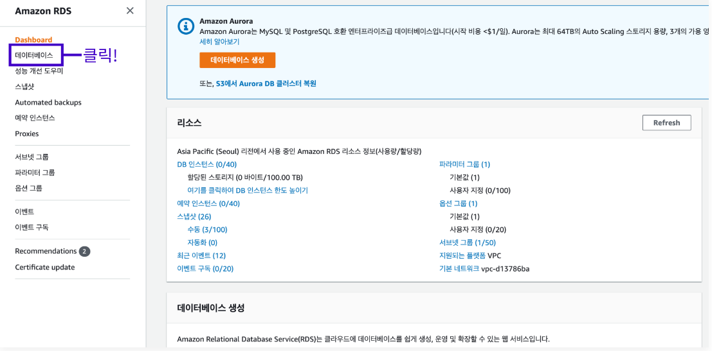

AWS 메인 콘솔 창에서 RDS를 검색하여 RDS 메인 화면으로 이동한다.
사이드 바에 위치한 데이터베이스 메뉴를 클릭하여 이동한다.

데이터베이스 메뉴로 이동한 뒤 화면에 보이는 데이터베이스 생성 버튼을 클릭한다.
데이터베이스 생성 버튼을 클릭하면 DB 인스턴스의 생성과 관련해서 여러 가지 옵션을 지정할 수 있는 페이지가 보인다.
이 중 데이터베이스 엔진 옵션을 선택해야한다.
여기에서는 MySQL을 사용하여 진행한다.
데이터베이스 엔진을 MySQL로 선택하고 페이지의 스크롤을 살짝 아래로 내리면 템플릿 옵션 화면을 볼 수 있는데 여기에서는 프리 티어 옵션을 선택한다.
설정 옵션 창으로 이동하여 DB 클러스터 식별자 이름, 마스터 사용자 이름과 마스터 암호를 기재한다.
마스터 사용자 이름과 암호는 나중에 데이터베이스를 연결할 때 쓰이는 정보로 반드시 기억해야 한다.
연결 옵션으로 이동하셔서 퍼블릭 액세스 가능 부분을 예로 설정한다.
보안 그룹 같은 경우는 기본값인 default 보안 그룹을 선택한다.
다른 보안 그룹을 선택 시 로컬 환경 터미널에서 테스트가 불가능하다.
추가 연결 구성 토글을 열면 데이터베이스 포트 번호를 지정할 수 있는 창이 보인다.
여기서는 흔히 사용되는 3306번 포트 대신 포트 번호 노출을 방지하려는 목적으로 13306번으 지정하였다.
포트 번호 변경이 완료된 뒤 페이지의 스크롤을 아래로 내려 추가 구성 토글 창을 찾아 클릭한다.
추가 구성 토글을 열면 여러 옵션을 추가로 확인 가능하다.
여기에서는 초기 데이터베이스 test 라는 이름으로 설정하였다.
초기 데이터베이스 이름을 기입하고 나면 모든 설정이 끝난다.
데이터베이스 생성 버튼을 클릭하여 DB 인스턴스를 생성한다.
DB 인스턴스가 생성되기까지 시간이 오래 걸린다.
아래 사진과 같이 상태 부분이 생성 중으로 보인다면 정상적으로 생성 중이며 해당 부분이 사용 가능으로 변화하면 DB 인스턴스 생성이 완료되었다는 소리이다.